Рыжие потёки
Ржавые следы, вода желтеет в стакане.
ОткрытьПодбираем и монтируем фильтрационные установки по вашему анализу воды.
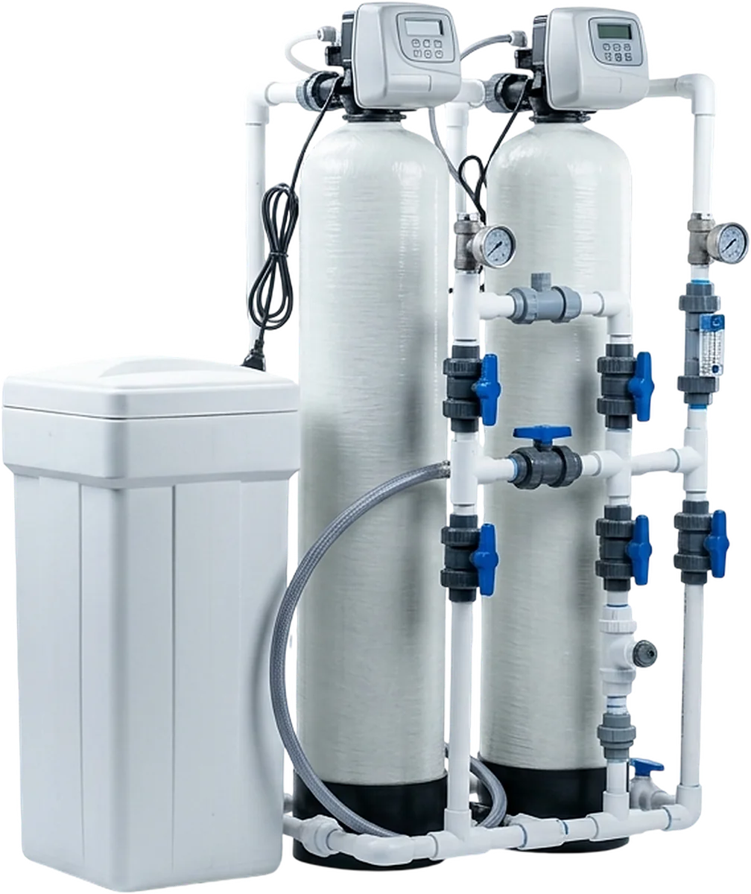
Три частые ситуации. Выберите свою.
Начните с того, что видите дома.
Ржавые следы, вода желтеет в стакане.
Открыть
Накипь в чайнике, плохо мылится.
Открыть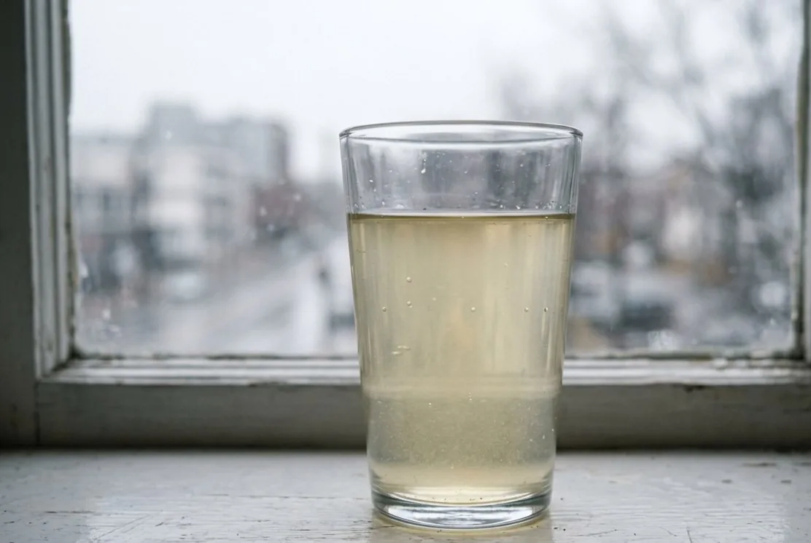
Пахнет тухлыми яйцами или болотом.
Открыть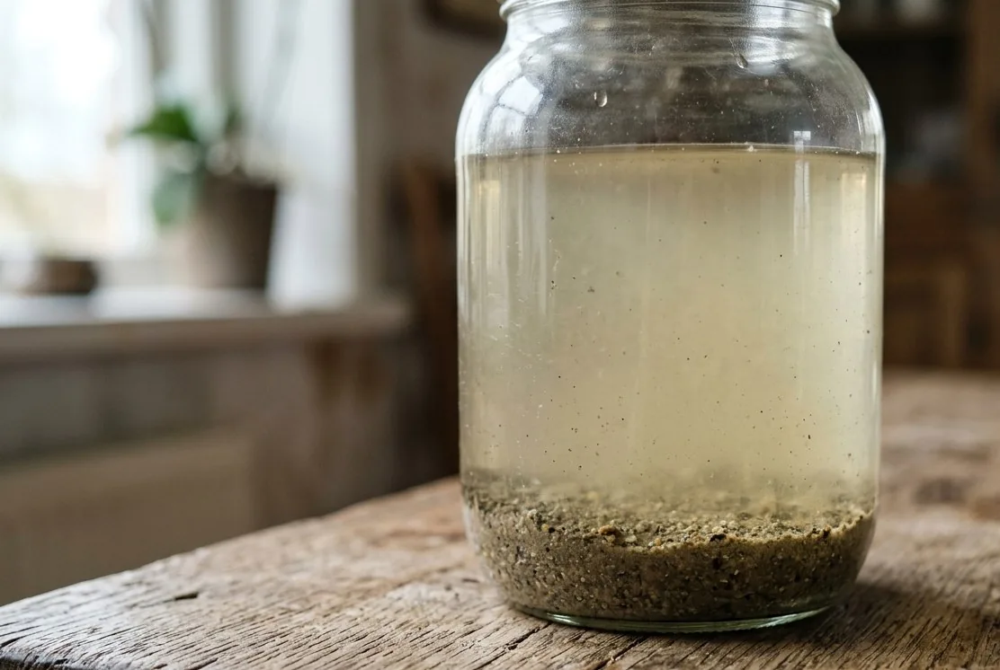
Взвесь, осадок и помутнение после дождей.
ОткрытьСкважина, колодец и водопровод пачкаются по-разному.
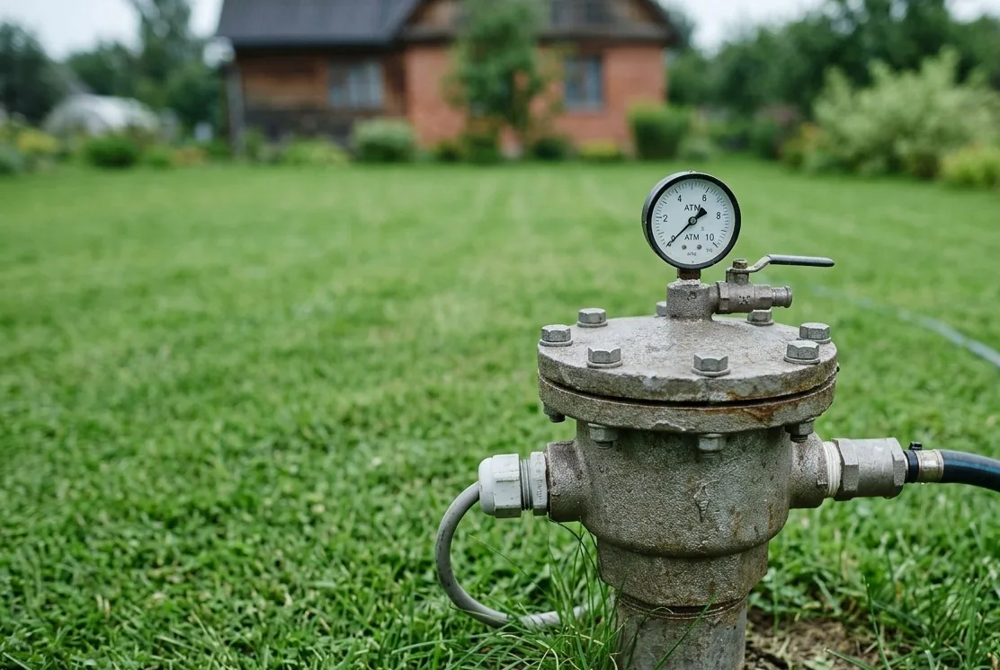
Железо, жёсткость, марганец, запах.
Открыть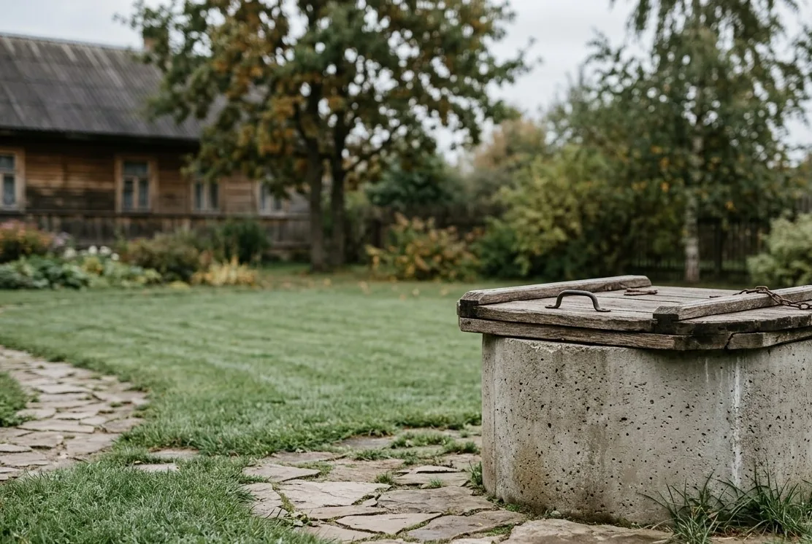
Сезонность, органика, нитраты, микробиология.
Открыть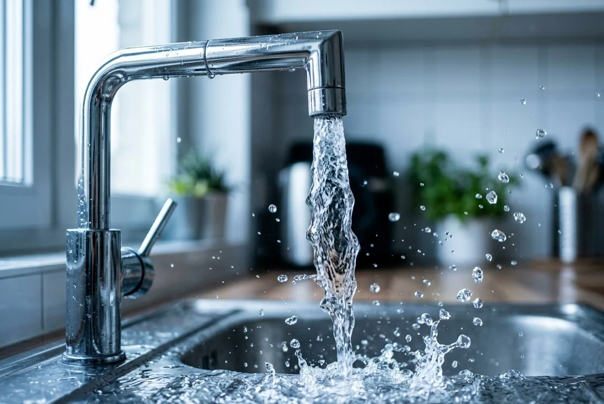
Хлор, ржавчина из труб, жёсткость.
ОткрытьПоможем выбрать модель, когда будет понятен анализ воды и расход дома.
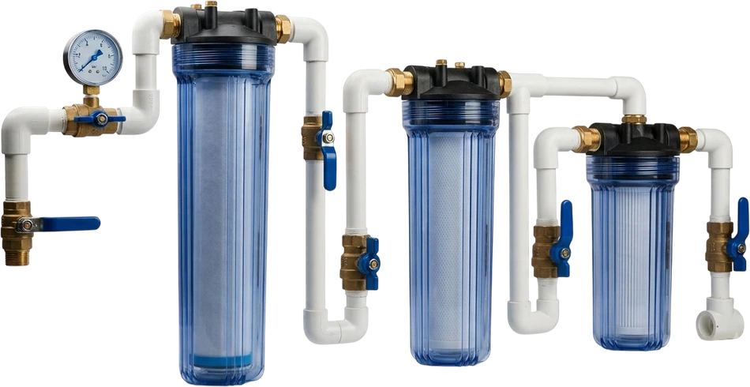
Несколько показателей сразу.
Открыть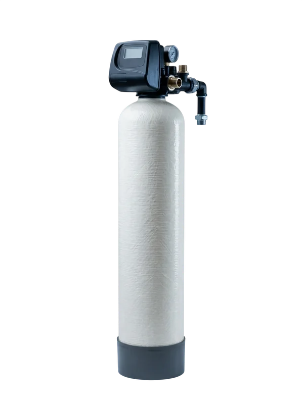
Рыжие потёки и привкус.
Открыть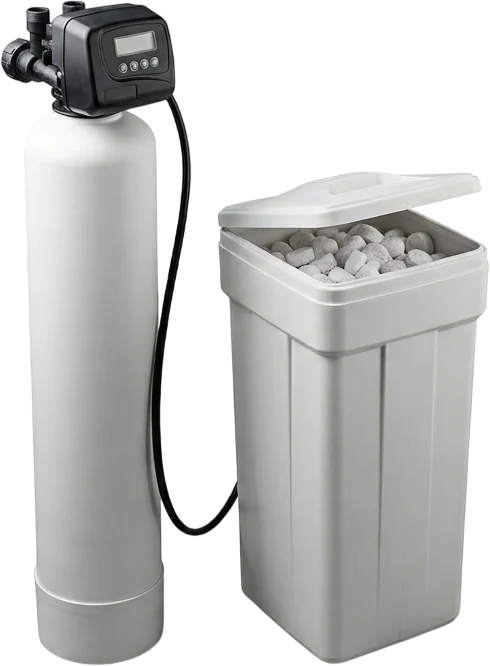
Накипь и белый налёт.
Открыть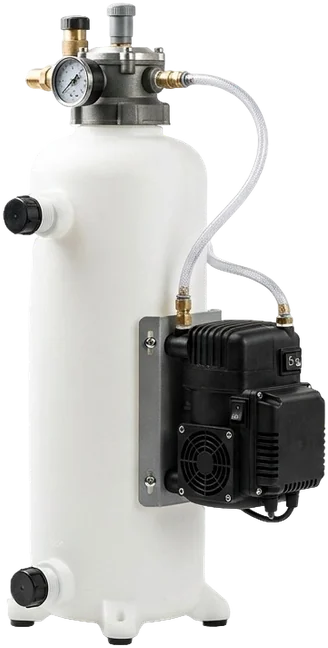
Железо и сероводород.
Открыть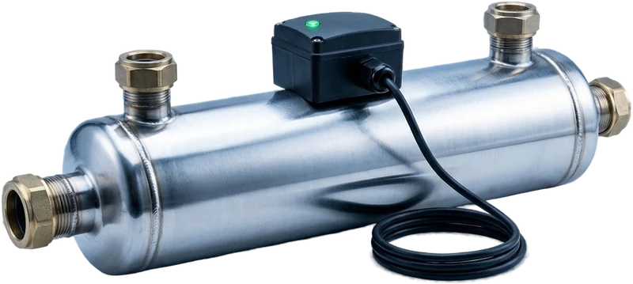
Бактерии в анализе.
Открыть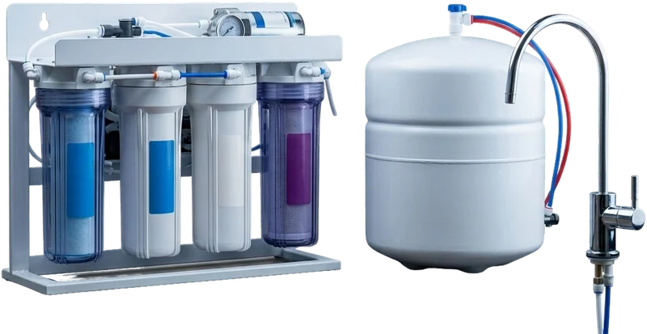
Отдельная точка на кухне.
Открыть
Схему считает тот же специалист, который приедет на объект. Монтаж, обвязка, дренаж и настройка автоматики идут одной работой.
После запуска остаётся регламент обслуживания.
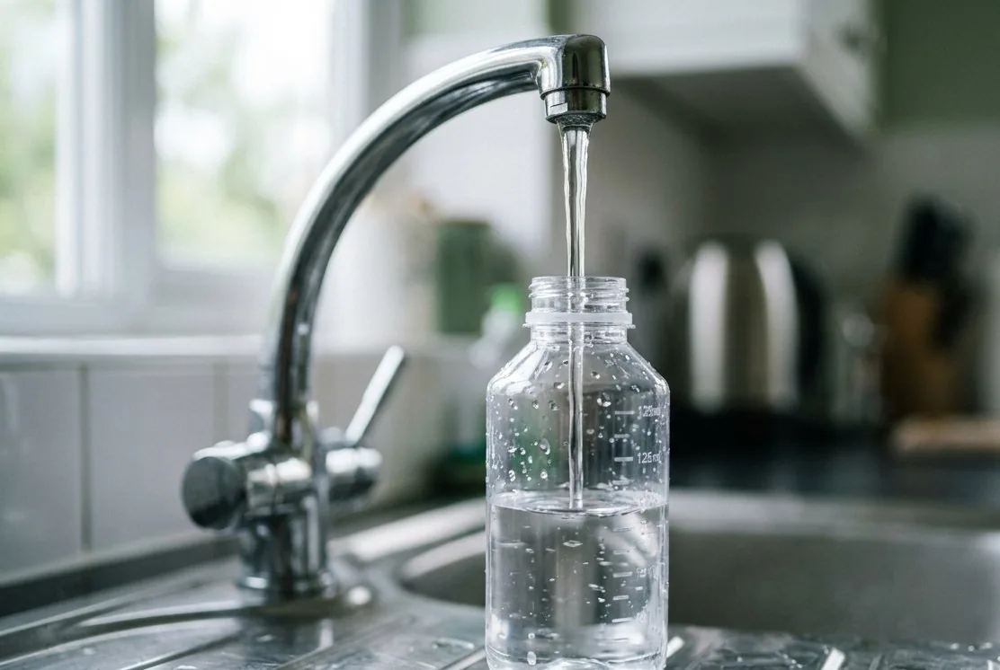
Результат показывает анализ воды после системы – по тем же строкам, что были в исходном протоколе.
Анализ делает лаборатория – заключение должно быть независимым. Подскажем, какие показатели заказать, а по готовому протоколу соберём схему.
После запуска берём повторную пробу по этим же строкам – так видно, что вода пришла к норме.
Нет. Один симптом бывает связан с разными причинами, а часть загрязнений вообще не видна. Внешние признаки помогают определить, какие показатели проверить, но не заменяют лабораторный анализ.
На стоимость влияют анализ, пиковый расход, число точек водоразбора, давление, место установки, дренаж, автоматика и объём монтажных материалов. На сайте нужно показывать ориентиры и состав цены, а точную смету – после исходных данных.
Это зависит от правильного расчёта производительности и потерь давления. До подбора нужно знать входное давление и сколько кранов или душей могут работать одновременно.
Ответ зависит от типа загрузки, реагентов, объёма промывки и конкретного септика. Этот вопрос должен быть частью проекта, а не решаться монтажником уже на объекте.
Не всегда. Система для всего дома и питьевая подготовка решают разные задачи. Пригодность подтверждают составом схемы и анализом очищенной воды, а не вкусом.
Нужно считать соль, картриджи, воду на промывку, электричество, сервис и периодическую замену загрузки. В карточке каждого комплекта предусмотрен отдельный блок стоимости владения.
Сначала зафиксируем источник и симптомы. Для точного решения понадобятся анализ и параметры дома.